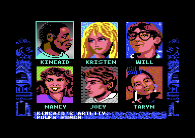
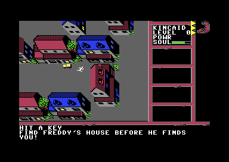
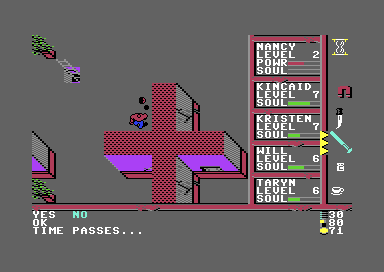

<meta charset="utf-8">
<meta name="viewport" content="width=device-width, initial-scale=1">
<title>A Nightmare on Elm Street: gameplay</title>
<link rel="preconnect" href="https://fonts.googleapis.com">
<link rel="stylesheet" href="https://fonts.googleapis.com/css2?family=Lato:wght@400;700;900&family=IBM+Plex+Mono:wght@400;500&display=swap">
<style>
:root{
  --bg:#23262d; --paper:#e9e7e1; --surface:#ffffff; --surface-2:#f1efea; --line:#d5d3cc; --line-soft:#e0ded8;
  --ink:#2f3136; --ink-soft:#55585f; --ink-mute:#80838a;
  --link:#1f5fa8; --link-hover:#154480; --accent:#1f5fa8;
  --amber:#c25a00; --cyan:#1f5fa8; --coral:#d04a3a; --green:#2a8a4a; --violet:#4a5bd6; --hl:#fff0c2;
  --chip:#2f3136; --chip-ink:#ffffff;
  --c64blue:#40318d; --c64grey:#686868;
  --fd:'Lato',system-ui,sans-serif; --fb:'Lato',system-ui,sans-serif; --fm:'IBM Plex Mono',ui-monospace,Menlo,monospace;
  --col:1080px; --gx:68px; --fs:17px; --lh:1.6; --hw:900; --h1:46px; --h2:26px; --sy:48px; --pp:26px; --r:10px;
  --plate-shadow:0 1px 2px rgba(0,0,0,.05),0 4px 14px rgba(0,0,0,.05);
}
*{box-sizing:border-box}
html{background:var(--bg);min-height:100%}
body{background:var(--paper);color:var(--ink);font-family:var(--fb);font-size:var(--fs);line-height:var(--lh);max-width:var(--col);margin:0 auto;min-height:100vh;padding:0 0 4rem}
h1,h2,h3{font-weight:var(--hw);letter-spacing:-.01em;text-wrap:balance;color:var(--ink);margin:0}
.wrap{padding:0 var(--gx)}
.hero{padding:48px var(--gx) 8px;text-align:left}
.eyebrow{font-family:var(--fm);font-size:12px;letter-spacing:.08em;text-transform:uppercase;color:var(--ink-mute);margin:0 0 10px}
.hero h1{font-size:var(--h1);line-height:1.15;letter-spacing:-.02em;margin:0 0 14px}
.hero .sub{margin:0 0 .6em;color:var(--ink-soft)}
section{padding:var(--sy) 0 24px}
section:last-of-type{border-bottom:none}
.fig{font-family:var(--fm);font-size:12px;letter-spacing:.08em;text-transform:uppercase;color:var(--ink-mute);margin:0 0 10px}
h2.t{font-size:var(--h2);margin-bottom:12px}
.lede{color:var(--ink-soft);margin:0 0 30px}
.plate{background:var(--surface);border:1px solid var(--line);border-radius:var(--r);padding:var(--pp);box-shadow:var(--plate-shadow)}
.cap{font-size:14px;color:var(--ink-mute);margin-top:14px;line-height:1.55}
.cap b{color:var(--ink);font-weight:700}
code{font-family:var(--fm);font-size:.82em;background:var(--chip);color:var(--chip-ink);border-radius:4px;padding:2px 6px;overflow-wrap:break-word;-webkit-box-decoration-break:clone;box-decoration-break:clone}
.plate{margin:0 0 22px}
.ft-table{border-collapse:collapse;font-size:14px;width:100%}
.ft-table td,.ft-table th{border-bottom:1px solid var(--line-soft);padding:5px 8px;text-align:left;vertical-align:top}
.ft-two{display:grid;grid-template-columns:1fr 1fr;gap:16px;align-items:start}
.ft-two .plate{margin:0;padding:12px}
.ft-px{width:100%;height:auto;image-rendering:pixelated;display:block}
.ft-tabs{display:flex;flex-wrap:wrap;gap:6px;margin:0 0 12px}
.ft-scroll{overflow:auto;max-height:80vh;border-radius:6px;background:#222}
.ft-scroll canvas{image-rendering:pixelated;display:block}
.ft-key{display:flex;flex-wrap:wrap;gap:6px 16px;font-size:14px;margin:10px 0 0;color:var(--ink-soft)}
.ft-key span{display:inline-flex;align-items:center;gap:6px}
.ft-key b{display:inline-block;min-width:22px;text-align:center;font:700 12px/18px var(--fm);border-radius:4px;color:#fff;padding:0 4px}
sup.fn{font-size:.7em;line-height:0}
sup.fn a{text-decoration:none}
sup.fn + sup.fn::before{content:","}
.overview-shot{margin:22px 0}
.overview-shot img{width:100%;max-width:768px;height:auto;aspect-ratio:384/272;image-rendering:pixelated;display:block}
.overview-shot figcaption{font-size:14px;color:var(--ink-mute);margin-top:8px;max-width:768px}
@media (max-width:760px){:root{--gx:16px;--h1:36px;--pp:14px}.ft-two{grid-template-columns:1fr}}
kbd{font:500 12px/1 var(--fm);border:1px solid var(--line);border-bottom-width:2px;border-radius:4px;padding:2px 5px;background:var(--surface-2);color:var(--ink);white-space:nowrap}
.nm-compass{max-width:520px;table-layout:fixed}
.nm-compass td{text-align:center;padding:10px 6px;border:1px solid var(--line-soft)}
</style>
<!-- tabs -->
<header class="hero">
  <p class="eyebrow">Commodore 64 · 1989 · Monarch Software</p>
  <h1>Gameplay</h1>
  <p class="sub">Choose a Dream Warrior, find Freddy's house in Springwood, then climb down through ten levels of his dream to rescue your friends and fight him at midnight.</p>
</header>
<main class="wrap" data-part="">

<section id="characters">
  <p class="fig">01 · The Dream Warriors</p>
  <h2 class="t">Five who can be chosen, and Joey who cannot</h2>
  <p class="lede">The game starts with six portraits. Five of the Dream Warriors can be chosen, each with a special power. Joey's portrait is there, but fire does nothing on it: his ability reads "NONE (VICTIM)".</p>
  <figure class="overview-shot"><figcaption>The character select. The stick moves the flashing frame and fire chooses.</figcaption></figure>
  <p><a href="source-street.html#2286"><code>select_loop</code></a> moves the frame round the two rows of three and prints each one's name and ability from the list at <a href="source-street.html#23A9"><code>$23A9</code></a>. Fire on Joey's place, the fifth, is ignored, and the sixth place gives Taryn. The rest of the game knows only five characters, numbered 0 to 4.</p>
  <p>Each character has a different body and a different spirit. The most <a href="#soul">health</a> each can have is in <a href="source-house.html#7363"><code>health_tops</code></a>, the most power in <a href="source-house.html#7359"><code>power_tops</code></a>, and what their <a href="#powers">special power</a> costs in <a href="source-house.html#735E"><code>power_costs</code></a>.</p>
  <table class="ft-table">
    <thead><tr><th>Character</th><th>Special power</th><th>Most health</th><th>Most power</th><th>Power per use</th></tr></thead>
    <tbody>
      <tr><td>Kincaid</td><td>Power punch</td><td>70</td><td>50</td><td>5</td></tr>
      <tr><td>Kristen</td><td>Karate kick</td><td>60</td><td>60</td><td>5</td></tr>
      <tr><td>Will</td><td>Lightning</td><td>50</td><td>80</td><td>5</td></tr>
      <tr><td>Nancy</td><td>Freeze time</td><td>70</td><td>50</td><td>30</td></tr>
      <tr><td>Taryn</td><td>Magic knives</td><td>50</td><td>90</td><td>5</td></tr>
    </tbody>
  </table>
  <p>The pictures each character is drawn with are on the <a href="graphics.html#characters">Graphics</a> tab.</p>
</section>

<section id="street">
  <p class="fig">02 · Springwood</p>
  <h2 class="t">Find Freddy's house before he finds you</h2>
  <p class="lede">The game opens on the streets of Springwood: "ENTERING SPRINGWOOD, USA!" and then "FIND FREDDY'S HOUSE BEFORE HE FINDS YOU!" A giant Freddy walks the streets after you, and his house is somewhere else every game.</p>
  <figure class="overview-shot"><figcaption>Springwood. The panel on the right has the player's box, with the name, level, power, and soul, above four empty boxes.</figcaption></figure>
  <p><a href="source-street.html#378B"><code>street_new_game</code></a> puts you at cell 57, 42 of the 64 by 64 street map and builds Freddy's house at one of nine places, picked at random from the tables at <a href="source-street.html#3882"><code>$3882</code></a> and <a href="source-street.html#388B"><code>$388B</code></a>. The nine places are marked on the <a href="levels.html#street">Maps</a> tab.</p>
  <p>Freddy is the only monster in the street. <a href="source-street.html#21A7"><code>street_monsters_init</code></a> starts him at cell 38, 25, and <a href="source-street.html#2862"><code>street_freddy</code></a> walks him straight at you, turning round walls one step at a time. When he reaches you, <a href="source-street.html#2E60"><code>freddy_attacks_street</code></a> rolls a number: 40 times in 256 his claw lands and takes 5 health. With no way to fight him in the street, the only answer is to keep walking.</p>
  <p>Walking into the house runs <a href="source-street.html#35D4"><code>freddys_house_touch</code></a>, which prints a long speech: "YOU HAVE DONE WELL IN FINDING FREDDY'S HOUSE, BUT YOUR BATTLE HAS JUST BEGUN. YOU MUST SEEK OUT YOUR FRIENDS, FOR ONLY WITH THEIR HELP DO YOU STAND A CHANCE AGAINST FREDDY." Then <a href="source-street.html#1EC1"><code>street_to_house</code></a> passes the character, the health, and the sound switch to the house part, <code>MAIN</code>, and loads it from side 2.</p>
</section>

<section id="house">
  <p class="fig">03 · Inside the house</p>
  <h2 class="t">Ten levels, joined by ladders</h2>
  <p class="lede">Inside, the dream goes down. Each level is a maze of 64 by 64 cells, seen from above, and ladders join each level to the one below. The way to Freddy is at the bottom, on level 10.</p>
  <figure class="overview-shot"><figcaption>Level 2. The panel shows the player's box at the top and the four friends' boxes below it.</figcaption></figure>
  <p>Stepping onto a ladder runs <a href="source-house.html#56E0"><code>ladder_touch</code></a>. A ladder down is cell <code>$1C</code> and a ladder up is <code>$1D</code>. <a href="source-house.html#572F"><code>change_level</code></a> asks "DO YOU WISH TO USE THE LADDER?", warns that the game will be <a href="#saving">saved</a>, and puts you at the new level's arrival place from the tables at <a href="source-house.html#77C3"><code>$77C3</code></a> going down and <a href="source-house.html#77D9"><code>$77D9</code></a> going up. Every ladder and arrival place is drawn on the <a href="levels.html#maps">Maps</a> tab.</p>
  <p>Each level has a script in its file <code>SCn.DAT</code>. Stepping on certain cells runs <a href="source-house.html#5BD2"><code>run_trigger</code></a>, which steps through a list of operations. They print texts, move you about, open walls, give and take items, place monsters, turn off the lights, and test what you carry or which way you face. The scripts set each level's puzzle. Level 6 is "LET'S MAKE A DEAL", with three curtains and two buttons that decide where each curtain sends you. Level 7 has a Room of Four Seasons, and level 9 has tests of fire, electricity, and pits.</p>
  <p>Levels in darkness show only a round patch around you when you carry the LANTERN (<a href="source-house.html#3D5B"><code>lantern_shows</code></a>). The MAP item draws the whole level at once, two dots to a cell (<a href="source-house.html#3034"><code>use_map</code></a>).</p>
</section>

<section id="friends">
  <p class="fig">04 · The friends</p>
  <h2 class="t">Four friends, and Freddy draining their souls</h2>
  <p class="lede">The other four Dream Warriors are hidden in the house. Freddy visits them while you search, and each visit takes some of a friend's soul. A friend whose soul runs out is lost.</p>
  <p>When a game starts, <a href="source-house.html#1843"><code>init_party</code></a> gives each friend one of ten hiding places at random. The places are spread over levels 2, 4, and 6 to 9, and the <a href="levels.html#hiding">Maps</a> tab marks each one. A friend appears in the map when you reach their level. Walking into them runs <a href="source-house.html#59E5"><code>rescue_friend</code></a>: "CONGRATULATIONS!! YOU'VE SAVED " and the friend's name, and their box in the panel reads "RESCUED".</p>
  <p>Freddy keeps his own timer, counted down by the <a href="source-house.html#1495"><code>game_clock</code></a>. The clock takes 23 from a byte each pass of the main loop and ticks each time the byte wraps, about once in 11 passes, and Freddy's timer runs 240 ticks, about 2,670 passes. When it runs out, <a href="source-house.html#152B"><code>freddy_attacks_friend</code></a> picks one of the four friends at random. A friend who is still hidden loses 11 to 20 points of soul, and you read "YOU HEAR" and their name "SCREAMING IN AGONY IN THE DISTANCE!" At zero the box reads "R.I.P." and the hiding place stays empty. When the friend is on your level, Freddy himself appears at their hiding place. Beat that Freddy and he only flees: "ARRGGHH! MAYBE I'LL VISIT ONE OF YOUR FRIENDS!", with his timer set so that his next visit comes at once (<a href="source-house.html#4523"><code>damage_monster</code></a>). When the pick falls on a friend already rescued or lost, nothing happens.</p>
  <p>Rescued friends matter at the end. One or two of them fight beside you in <a href="#final">the final fight</a>.</p>
</section>

<section id="soul">
  <p class="fig">05 · Health and power</p>
  <h2 class="t">The soul and power meters</h2>
  <p class="lede">The panel shows two meters for you: health, which the game calls your soul, and power, which pays for the special power. When health reaches zero you die.</p>
  <p>Every change of health goes through <a href="source-house.html#440E"><code>change_health</code></a>. It flashes the meter, stops a gain at the top and a loss at zero, and at zero calls <a href="source-house.html#46F7"><code>player_died</code></a>. Monsters, floors, haunted items, and some scripts take health. COFFEE gives 20 and a random amount more (<a href="source-house.html#2FE9"><code>use_coffee</code></a>), and HYPNOCIL gives 40 and 15 power (<a href="source-house.html#3008"><code>use_hypnocil</code></a>).</p>
  <p>Power starts at nothing and comes back slowly: <a href="source-house.html#4045"><code>power_regain</code></a> adds 2 points every 16 passes of the main loop. <a href="source-house.html#402C"><code>spend_power</code></a> takes the cost of each special power, and without enough you read "YOU DON'T HAVE ENOUGH POWER". Amanda Krueger, Freddy's mother, speaks on some levels and raises the top of a meter: the script operations <a href="source-house.html#5ECC"><code>op_more_health</code></a> and <a href="source-house.html#5EEA"><code>op_more_power</code></a> each add to it, up to 99.</p>
</section>

<section id="powers">
  <p class="fig">06 · Special powers</p>
  <h2 class="t">Punch, kick, lightning, freeze, and knives</h2>
  <p class="lede">The special power sits in the first slot of the inventory, and every character's works differently.</p>
  <p><a href="source-house.html#4C0B"><code>special_power</code></a> takes the character's cost from the power meter and then:</p>
  <ul>
    <li>Kincaid's <b>power punch</b> strikes the monster in front for 15 damage, and when it hits nothing breaks through the wall ahead, as a <a href="#tunnels">tunnel</a>.</li>
    <li>Kristen's <b>karate kick</b> strikes for 20.</li>
    <li>Will's <b>lightning</b> is a shot that does 55, the same as the TASER.</li>
    <li>Nancy's <b>freeze time</b> stops every monster for 100 passes, or 15 in the final fight. It costs 30, six times the others.</li>
    <li>Taryn's <b>magic knives</b> are a shot that does 25.</li>
  </ul>
  <p>The damage of the two strikes is in <a href="source-house.html#45EB"><code>power_damage</code></a>, and the two shots' in <a href="source-house.html#45F6"><code>shot_damage</code></a>.</p>
</section>

<section id="monsters">
  <p class="fig">07 · Monsters</p>
  <h2 class="t">Five kinds of monster, and each has a weakness</h2>
  <p class="lede">Monsters walk at you and strike when they reach you. Some kinds take far more damage from one weapon, and the level texts give the hints: "THE DAGGER WORKS BEST ON SLIME", "THE BAT WORKS BEST ON SKELETONS", "THE PICK WORKS BEST ON ROACHES", and "THE AXE WORKS BEST ON WHEELCHAIRS".</p>
  <p><a href="source-house.html#494A"><code>spawn_monsters</code></a> brings a new monster in at one of the level's spawn points when the level's timer runs out, as long as fewer are about than the level allows. <a href="source-house.html#2590"><code>move_monsters</code></a> walks each one towards you, and some shoot when they have a clear line. <a href="source-house.html#4523"><code>damage_monster</code></a> looks up the kind's weakness in <a href="source-house.html#744C"><code>kind_weakness</code></a>: the right weapon does 28 to a roach (the PICK otherwise does 6), 50 to a slime (the DAGGER otherwise does 4), and 19 to a wheelchair (the AXE otherwise does 12). The skeleton's weapon, the BASEBALL BAT, does 19 to it, the same as to anything else, so that hint changes nothing (<a href="discoveries.html#bat">Discoveries</a>). The winged kind, which flies through walls, has no weakness. When a monster dies, one time in four it leaves COINS behind.</p>
  <p>Each kind's hit points, damage, speed, and chance to hit are in a table on the <a href="graphics.html#monsters">Graphics</a> tab, beside its pictures.</p>
</section>

<section id="items">
  <p class="fig">08 · Items</p>
  <h2 class="t">Weapons, tools, and seven slots to carry them</h2>
  <p class="lede">Items lie about the levels. Walking onto one picks it up, into the first free slot of seven. BULLETS, BATTERIES, and COINS are counted instead, up to 999 of each.</p>
  <p><a href="source-house.html#2CEA"><code>pick_up</code></a> adds 10 bullets, 20 batteries, or 2 to 7 coins, and puts any other item in a slot. With every slot full you read "YOU CAN'T CARRY ANY MORE ITEMS." Fire with the stick still uses the item in hand (<a href="source-house.html#2F4C"><code>use_item</code></a>). With nothing in hand, or the <a href="#magnet">MAGNET</a>, <a href="source-house.html#3309"><code>auto_select</code></a> picks the best weapon you carry, in the order of <a href="source-house.html#3368"><code>weapon_order</code></a>.</p>
  <table class="ft-table">
    <thead><tr><th>Weapon</th><th>How it works</th><th>Damage</th><th>Costs</th></tr></thead>
    <tbody>
      <tr><td>DAGGER</td><td>strikes in front</td><td>4, 50 on a slime</td><td></td></tr>
      <tr><td>BASEBALL BAT</td><td>strikes in front</td><td>19</td><td></td></tr>
      <tr><td>AXE</td><td>strikes in front</td><td>12, 19 on a wheelchair</td><td></td></tr>
      <tr><td>PICK</td><td>strikes, or digs a <a href="#tunnels">tunnel</a></td><td>6, 28 on a roach</td><td>breaks one time in about 21</td></tr>
      <tr><td>CHAIN SAW</td><td>strikes, or cuts a tunnel</td><td>15</td><td>1 battery; breaks one time in about 21</td></tr>
      <tr><td>PISTOL</td><td>shoots</td><td>20</td><td>1 bullet</td></tr>
      <tr><td>SHOTGUN</td><td>shoots</td><td>35</td><td>2 bullets</td></tr>
      <tr><td>ICE GUN</td><td>shoots, and turns some moving cells into floor</td><td>45</td><td>2 batteries</td></tr>
      <tr><td>TASER</td><td>shoots, and its bolt cuts a tunnel where it meets a wall</td><td>55</td><td>4 batteries</td></tr>
      <tr><td>GRENADE</td><td>thrown; bursts</td><td>8 each pass the burst touches</td><td>used up</td></tr>
      <tr><td>HOLY WATER</td><td>thrown; bursts</td><td>6 each pass, and heals you 1 instead</td><td>used up</td></tr>
    </tbody>
  </table>
  <p>Strikes go through <a href="source-house.html#4B7B"><code>strike</code></a>, which hits the first monster within three steps in the direction you face. Guns go through <a href="source-house.html#4AAB"><code>fire_gun</code></a>, which waits until the last shot of the same kind has gone. Thrown items go through <a href="source-house.html#4C9B"><code>throw_item</code></a>. A grenade's burst also hurts you if you stand in it, as a level text warns: "DON'T GET CAUGHT IN YOUR GRENADE'S EXPLOSION."</p>
  <p>The instruction guide lists 13 of the 26 items, under its own names for some of them: its gun is the PISTOL, its rifle the SHOTGUN, its ammo the BULLETS, and its rope the JUMP ROPE.<sup class="fn"><a href="about.html#src-6">6</a></sup> "Some of them are listed here, but many are not," it warns, and the weapons it leaves out are the DAGGER, the BASEBALL BAT, the AXE, and the ICE GUN. The guide calls the rope "a one way ticket down" at pits and holes, and in the game carrying it halves the damage the pit floors do (<a href="#floors">Floors</a>).</p>
  <p>Other items have uses of their own. The KEY opens a door in front of you, facing up or left (<a href="source-house.html#3275"><code>use_key</code></a>). The LANTERN lights dark levels by being carried. The JUMP ROPE and the CRUCIFIX work by being carried too, against <a href="#floors">floors</a> and <a href="#haunted">haunted items</a>. The MAGIC SHIELD does nothing at all, as <a href="discoveries.html#shield">Discoveries</a> explains.</p>
</section>

<section id="vending">
  <p class="fig">09 · The vending machine</p>
  <h2 class="t">Coins buy nine things</h2>
  <p class="lede">Some levels have a vending machine. Walk into it and it asks "DO YOU WISH TO BUY SOMETHING?", then shows its own picture with nine items and their prices.</p>
  <p><a href="source-house.html#52CC"><code>vending_machine</code></a> lets you move a cursor round the 3 by 3 grid and buy with fire. <a href="source-house.html#54A2"><code>vend_buy</code></a> needs a free slot for anything but bullets and batteries, then takes the price from your coins. The items are in <a href="source-house.html#7A22"><code>vend_items</code></a> and the prices, in tens of coins, in <a href="source-house.html#7A19"><code>vend_prices</code></a>.</p>
  <table class="ft-table">
    <thead><tr><th>Item</th><th>Coins</th><th>Item</th><th>Coins</th><th>Item</th><th>Coins</th></tr></thead>
    <tbody>
      <tr><td>BULLETS (10)</td><td>20</td><td>PICK</td><td>40</td><td>GRENADE</td><td>100</td></tr>
      <tr><td>BATTERIES (20)</td><td>30</td><td>KEY</td><td>50</td><td>CHAIN SAW</td><td>200</td></tr>
      <tr><td>COFFEE</td><td>30</td><td>HYPNOCIL</td><td>50</td><td>MAP</td><td>500</td></tr>
    </tbody>
  </table>
  <p>The machine also has texts for a theft and a lucky win that nothing ever prints (<a href="discoveries.html#vending">Discoveries</a>).</p>
</section>

<section id="chests">
  <p class="fig">10 · Chests</p>
  <h2 class="t">Treasure, or a trap</h2>
  <p class="lede">"SOME CHESTS CONTAIN TREASURE. SOME CHESTS HAVE TRAPS." Walking into a chest opens it, and the deeper the level, the worse the odds.</p>
  <p><a href="source-house.html#519F"><code>open_chest</code></a> prints "THE CHEST OPENS, REVEALING " and rolls a number below 100. When the number is more than five times the level, the chest holds COFFEE, HYPNOCIL, BULLETS, BATTERIES, or COINS. On level 1 that is 94 chests in a hundred, and on level 10 only 49. Otherwise one of six things happens: the chest is empty, holds a <a href="#magnet">MAGNET</a>, lets out a slime, a skeleton, or Freddy himself, or bursts in "SHRAPNEL!!"</p>
</section>

<section id="floors">
  <p class="fig">11 · Floors</p>
  <h2 class="t">Floors that hurt, and one that holds you</h2>
  <p class="lede">Some floor cells hurt you each time you step on them, and one kind holds you still. The JUMP ROPE halves the damage of two kinds: "ROPE REDUCES DAMAGE WHEN USED CROSSING PITS!"</p>
  <p>Each floor that does something belongs to one of seven groups, and each level type switches some groups on (<a href="source-house.html#777A"><code>type_groups</code></a>). <a href="source-house.html#38F3"><code>hurt_floor</code></a> takes the group's damage from <a href="source-house.html#74B0"><code>floor_damage</code></a>: 5 for group 0, then 10, 2, 20, 10, and 20 for groups 2 to 6, halved for groups 4 and 6, the pits, while you carry the rope. Group 1 is the floor that holds you. <a href="source-house.html#3917"><code>sticky_floor</code></a> holds you for two passes each time you move onto it. A floor that kills plays its own <a href="#death">death animation</a>.</p>
</section>

<section id="tunnels">
  <p class="fig">12 · Tunnels</p>
  <h2 class="t">Cutting through walls</h2>
  <p class="lede">The PICK, the CHAIN SAW, the TASER, and Kincaid's power punch can cut a way through a wall. Most levels do not allow it: "YOU CAN'T TUNNEL ON THIS LEVEL".</p>
  <p>All four end in <a href="source-house.html#35AA"><code>add_room</code></a>, which tries to fit a piece of map 4 cells by 4 beyond the wall. When none fits you read "YOU CAN'T TUNNEL HERE, FREDDY'S RULES!" <a href="source-house.html#49D3"><code>use_pick</code></a> digs on every second use ("DIGGING WITH A PICK IS HARD WORK."), <a href="source-house.html#4A41"><code>use_chain_saw</code></a> on every use, and <a href="source-house.html#50DB"><code>bolt_tunnel</code></a> wherever a TASER bolt meets a wall. The PICK and the CHAIN SAW break one time in about 21, with "YOU BROKE IT".</p>
  <p>Level 1 grows. Each door you open there, with a KEY or a tunnel, adds a room beyond it, picked from 34 pieces at <a href="source-house.html#338A"><code>room_pieces</code></a>, so no two games' level 1 look the same. A level's script can switch tunnelling on or off (<a href="source-house.html#60E2"><code>op_growth</code></a>).</p>
</section>

<section id="haunted">
  <p class="fig">13 · Freddy's things</p>
  <h2 class="t">The hat, the glove, the magnet, and the crucifix</h2>
  <p class="lede">Some items are cursed. FREDDY'S HAT and FREDDY'S GLOVE attack whoever carries them, and the MAGNET swaps itself for something you carry. The CRUCIFIX protects you from the hat and the glove.</p>
  <p><a href="source-house.html#1439"><code>haunted_items</code></a> counts a timer for the hat and one for the glove while you carry them. Every 16 passes the message reads "FREDDY'S HAT IS ATTACKING YOU!" or "FREDDY'S GLOVE IS ATTACKING YOU!" and you lose 25 health. Carrying the CRUCIFIX stops both. Recovering it on level 8 brings the text "YOU NOW HAVE THE POWER TO TOUCH EVIL ITEMS WITHOUT TAKING DAMAGE!"</p>
  <p id="magnet">The MAGNET lies in the map like any item, but walking into it runs <a href="source-house.html#5155"><code>magnet_touch</code></a>: a random item you carry is dropped where the magnet was, and the magnet takes its slot. "MAGNETS ARE CURSED ITEMS. DROP THEM AS SOON AS POSSIBLE."</p>
  <p>On level 10 all three come together. A text tells you to rid yourself of them before Freddy appears at midnight: "TAKE THE CLAW TO THE EAST, THE HAT TO THE SOUTH AND THE CRUCIFIX TO THE WEST!"</p>
</section>

<section id="question">
  <p class="fig">14 · The manual question</p>
  <h2 class="t">Copy protection on the way to level 4</h2>
  <p class="lede">The first time down to level 4, the game asks a question about the manual, with four answers to choose from. Answer wrong and it asks again. Answer wrong a second time and the game stops for good.</p>
  <p><a href="source-house.html#5AF4"><code>manual_question</code></a> loads the file <code>COPY</code> and asks one of its ten questions at random. The right answers are at <a href="source-house.html#5B7A"><code>$5B7A</code></a>, one number from 0 to 3 for each question. A second wrong answer sends the game into a loop at <a href="source-house.html#5B65"><code>$5B65</code></a> that never ends, with nothing on screen to say so (<a href="discoveries.html#question">Discoveries</a>).</p>
  <p>Every answer the game expects is in the instruction guide, page for page, so the guide below is the one the disk was made for.<sup class="fn"><a href="about.html#src-6">6</a></sup> The pages count from the story, page 1, to the credits on the back, page 7. Two questions ask which item a page leaves out: the SKATEBOARD, which is nowhere in the game, and the BATTERIES, which the guide lists on page 5.</p>
  <table class="ft-table">
    <thead><tr><th>#</th><th>Question, as the game prints it</th><th>The four answers</th><th>Right</th><th>Where the guide has it</th></tr></thead>
    <tbody>
      <tr><td>1</td><td>THE FIRST WORD IN PARAGRAPH 3, PAGE 4 IS</td><td>EXCITEMENT, BEWARE, AMANDA, INDICATES</td><td><b>INDICATES</b></td><td>the paragraph under “On Level”</td></tr>
      <tr><td>2</td><td>SHAREDATA&#39;S TECHNICAL SUPPORT NUMBER IS</td><td>(602)961-4022, (602)961-2042, (603)983-4023, (714)999-4565</td><td><b>(602)961-4022</b></td><td>Technical Support, page 6</td></tr>
      <tr><td>3</td><td>THE FIRST WORD IN PARAGRAPH 4, PAGE 4 IS</td><td>DISPLAYED, AMANDA, YOU, THE</td><td><b>DISPLAYED</b></td><td>the paragraph under “Items and Special Power”</td></tr>
      <tr><td>4</td><td>THE HEADING AT THE TOP OF PAGE 1 IS</td><td>FREDDY&#39;S NIGHTMARES, DEADLY DREAMS, FREDDY KRUEGER, NEVER SLEEP</td><td><b>DEADLY DREAMS</b></td><td>the story that opens the guide</td></tr>
      <tr><td>5</td><td>THE LAST WORD IN PARAGRAPH 2, PAGE 3 IS</td><td>CONTROLS, INCLUDED, YOU, POWER</td><td><b>YOU</b></td><td>“…he can change them at anytime without telling you!”</td></tr>
      <tr><td>6</td><td>NOT LISTED AMONG THE ITEMS ON PAGE 4 IS</td><td>GUN, TASER, KEY, BATTERIES</td><td><b>BATTERIES</b></td><td>batteries are on page 5</td></tr>
      <tr><td>7</td><td>THE LAST WORD OF PARAGRAPH 3, PAGE 4 IS</td><td>FREDDY, THEM, GUN, ITSELF</td><td><b>THEM</b></td><td>“…before Freddy kills them.”</td></tr>
      <tr><td>8</td><td>NOT LISTED AMONG THE ITEMS ON PAGE 5 IS</td><td>BATTERIES, MAP, SKATEBOARD, PICK</td><td><b>SKATEBOARD</b></td><td>no skateboard anywhere in the game</td></tr>
      <tr><td>9</td><td>THE THIRD BOLD HEADING ON PAGE 5 IS</td><td>ABOUT FREDDY, TECHNICAL SUPPORT, DON&#39;T DREAM, SPECIAL POWERS</td><td><b>TECHNICAL SUPPORT</b></td><td>after “Hints from Amanda Krueger” and “About Freddy”</td></tr>
      <tr><td>10</td><td>THE FIRST WORD OF PARAGRAPH 1 PAGE 1 IS</td><td>FREDDY, NIGHTMARE, ELM, YOU</td><td><b>YOU</b></td><td>“You run… it's dark…”</td></tr>
    </tbody>
  </table>
</section>

<section id="final">
  <p class="fig">15 · Midnight</p>
  <h2 class="t">The final fight with Freddy</h2>
  <p class="lede">On level 10 a clock runs. Every so often you read "IT'S NOW n O'CLOCK", and at 12 Freddy comes for you, whether or not you are ready. The fight also starts when you reach him first.</p>
  <p><a href="source-house.html#1495"><code>game_clock</code></a> counts an hour as 120 of its ticks, about 1,336 passes of the main loop. At 12 o'clock it calls <a href="source-house.html#60EC"><code>final_fight</code></a>, the routine behind the script operation <code>$DD</code>, which a level's script can also start. The level's moving cells become floor, every monster goes, and Freddy appears with 1,000 hit points: "SO, YOU'VE MADE IT THIS FAR--NOW YOU MUST FIGHT ME!!" The sprites are doubled in size, and Freddy fills two of them.</p>
  <p>The script operation <code>$DA</code> (<a href="source-house.html#61F1"><code>op_ending</code></a>) prints a speech from the file <code>MSG</code>, one of three by the number of friends rescued. All three promise to heal you "UP TO YOUR FULL POTENTIAL". With one friend, "I WILL ADD HIS STRENGTH TO YOURS TO EFFECTIVELY DOUBLE YOUR POWER", and with two or more their "COMBINED STRENGTH" will triple it. In the code, the help is that one or two rescued friends fight beside you: each throws a copy of every shot and grenade you throw, from beside you (<a href="source-house.html#4AAB"><code>fire_gun</code></a>, <a href="source-house.html#4C9B"><code>throw_item</code></a>).</p>
  <p>Beat Freddy and <a href="source-house.html#4604"><code>game_won</code></a> loads the picture <code>HOUSE</code> and plays the <a href="music.html#tune">title tune</a> while "CONGRATULATIONS! YOU HAVE DEFEATED FREDDY AND ELM STREET IS SAFE AGAIN!" is printed, then offers a new game.</p>
</section>

<section id="saving">
  <p class="fig">16 · Saving</p>
  <h2 class="t">Every ladder saves the game</h2>
  <p class="lede">The game saves to side 2 every time you climb a ladder, and from a menu whenever you like, except on level 10. Each level also remembers what you changed in it.</p>
  <p>The save menu, on the <code>/</code> key (<a href="source-house.html#5A87"><code>save_menu</code></a>), offers "RETURN TO THE GAME", "SAVE THE GAME", and "LOAD A SAVED GAME". Saving runs <a href="source-house.html#4167"><code>save_level</code></a> and then <a href="source-house.html#42EF"><code>save_game</code></a>. The first compares the level's map with its first state on the disk and writes the difference to a file of its own, <code>Dn.CUR</code>: every opened door, cut tunnel, and item taken. The second writes the player, the friends, and the levels visited to <code>SAVE.DAT</code>. There is one save on a disk, and each save replaces it.</p>
  <p>A saved game is loaded from the first menu, "LOAD THE SAVED GAME", after swapping in side 2 (<a href="source-street.html#1E66"><code>load_saved_game</code></a>), or from the save menu in the house (<a href="source-house.html#4398"><code>load_game</code></a>).</p>
</section>

<section id="death">
  <p class="fig">17 · Death</p>
  <h2 class="t">"FREDDY HAS WON, AGAIN"</h2>
  <p class="lede">When your health runs out the game plays one of three short animations of your death, then prints "YOU'VE DIED. FREDDY HAS WON, AGAIN".</p>
  <p><a href="source-house.html#46F7"><code>player_died</code></a> calls <a href="source-house.html#47D3"><code>death_animation</code></a>, which picks the animation by what did the damage: Freddy, any other monster, or a floor. All three are on the <a href="graphics.html#death">Graphics</a> tab. Then a menu offers "START A NEW GAME", "LOAD THE SAVED GAME", or "STOP PLAYING", which prints "PLEASE TURN OFF THE COMPUTER" and waits for ever.</p>
</section>
</main>
<footer style="margin:16px 0 0;padding:22px var(--gx) 0;border-top:1px solid #e0ded8;font-family:'IBM Plex Mono',ui-monospace,Menlo,monospace;font-size:12px;color:#80838a"><a href="https://github.com/gamesexplained/gamesexplained" style="color:#1f5fa8;text-decoration:none">GitHub</a> · <a href="https://discord.gg/3V9GWyRDWV" style="color:#1f5fa8;text-decoration:none">Discord</a><br>© Games Explained contributors. Write-ups, facts and symbol maps are available under <a href="https://creativecommons.org/licenses/by-sa/4.0/" style="color:#1f5fa8;text-decoration:none">CC BY-SA 4.0</a>; code under <a href="https://opensource.org/licenses/MIT" style="color:#1f5fa8;text-decoration:none">MIT</a></footer>
